Food diary
Log meals by search, barcode scan or your own custom foods. See calories and macros against your daily goal, with a nudge when you land on target.
Train smarter. Eat better. Keep your data.
Plico is a free Android app for workout tracking, meal planning and nutrition. It ships with the Italian CREA food database, guided workouts with load suggestions, and an optional AI coach. No account, no ads, no analytics.
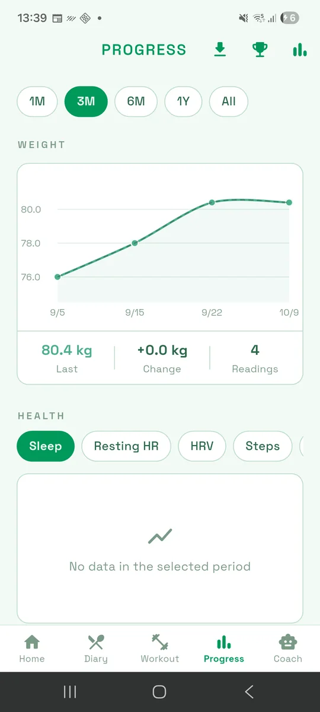
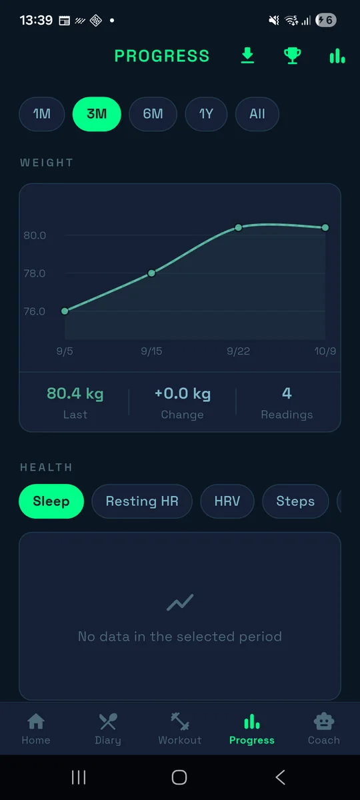
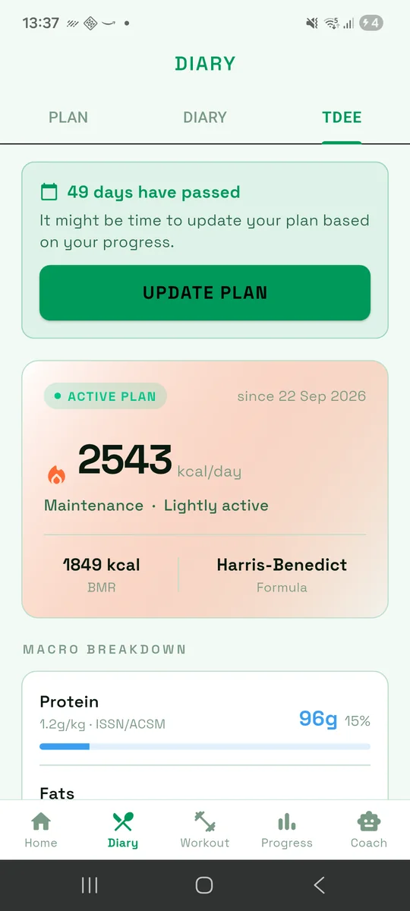
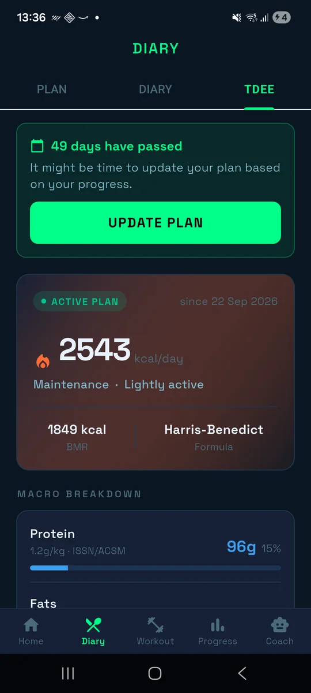
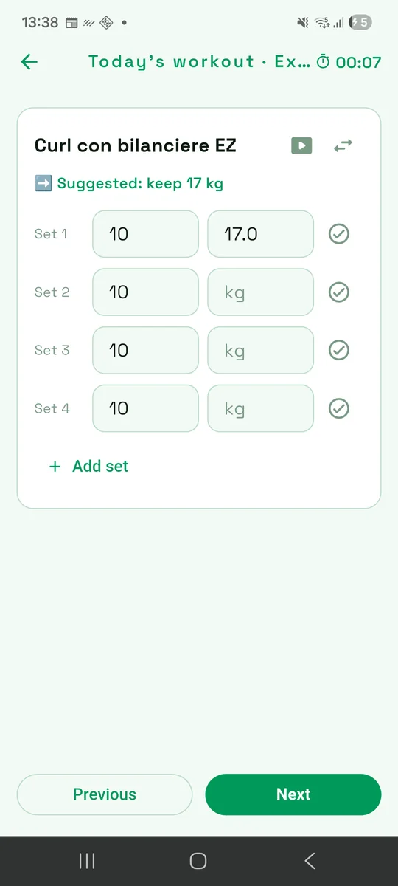
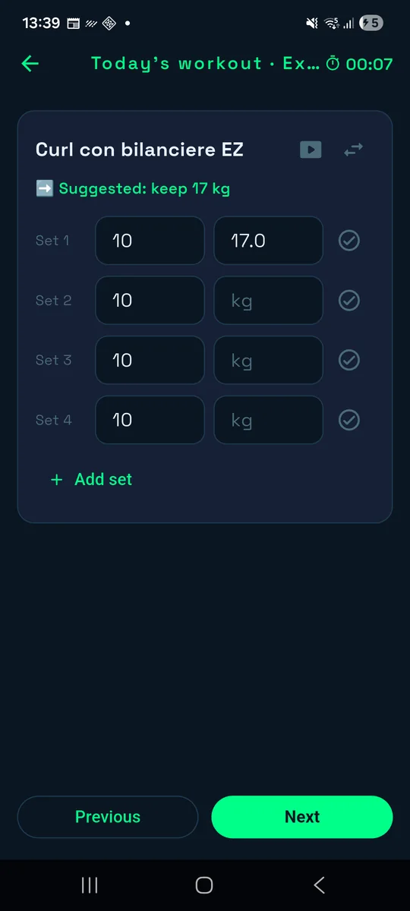
Plico covers the two halves of getting results: what you eat and how you train. Everything below works on your phone, with your data on your phone.
Log meals by search, barcode scan or your own custom foods. See calories and macros against your daily goal, with a nudge when you land on target.
Builds a day of meals from your calorie and macro targets and your food preferences, with alternatives for every slot. Quantities are weighed raw and rounded to 5 g.
BMR and TDEE with Katch-McArdle, Mifflin-St Jeor or Harris-Benedict, your activity level and goal, and a macro split based on ISSN/ACSM guidelines.
Templates, multi-day programs, a calendar and a free-exercise logger. Export any template to PDF.
Step through each exercise with set targets, a rest timer and a suggested load based on your history, so progression is never guesswork.
Pick a technique per exercise: superset, cluster, pyramid, rest-pause, stripping or super slow, and plan it into the template.
A bundled, offline catalog with images, filterable by muscle group. Add your own custom exercises.
Weight, calories, macros and training charts from 1 month to all time, plus personal records and weekly volume per muscle group.
A weekly summary, insights from your own data, streaks and achievements to keep you consistent without nagging.
Skinfold and circumference measurements: US Navy method plus four skinfold protocols, with body-fat %, fat and lean mass and BMI.
Import workouts and wellness data (heart rate, sleep, HRV, steps) through Android Health Connect.
Ask workout and nutrition questions to a Gemini-powered assistant that knows your plan. It uses your own API key, so there is no Plico server and no subscription.
No account, no ads, no analytics. Your data lives in a local database. Export and import backups, or move everything to a new phone over Wi-Fi.
Configurable meal reminders and a home-screen widget so the next meal or workout is one glance away.
The whole interface in two languages, with Italian CREA food names and English translations.
Real screenshots from the app. Tap a screen to enlarge it.
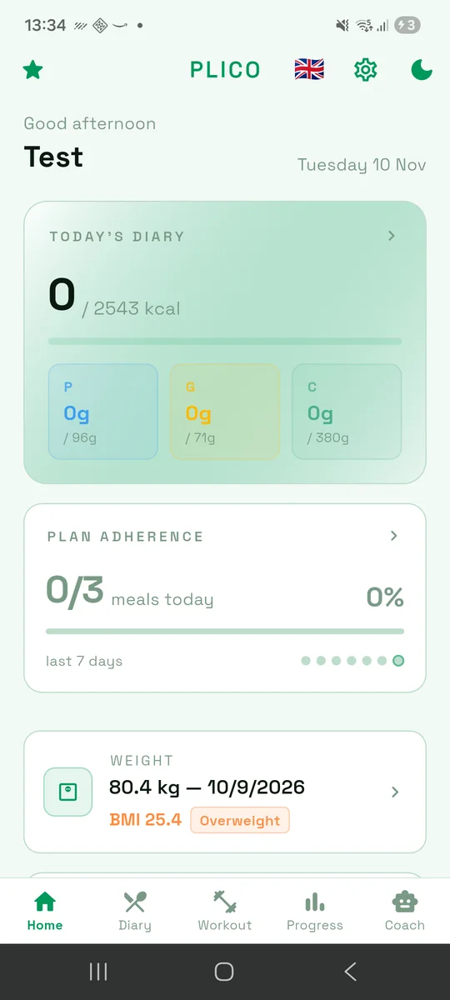
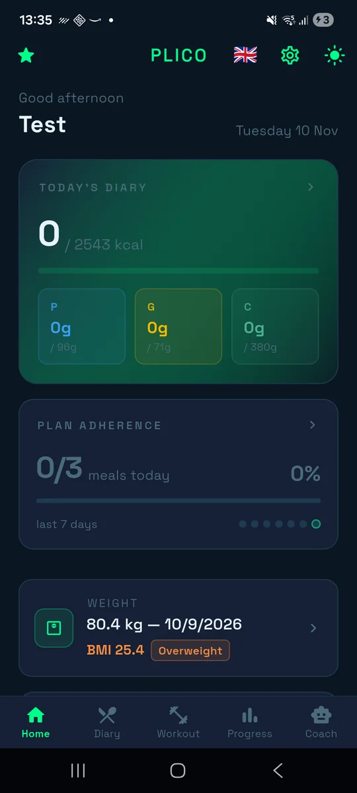
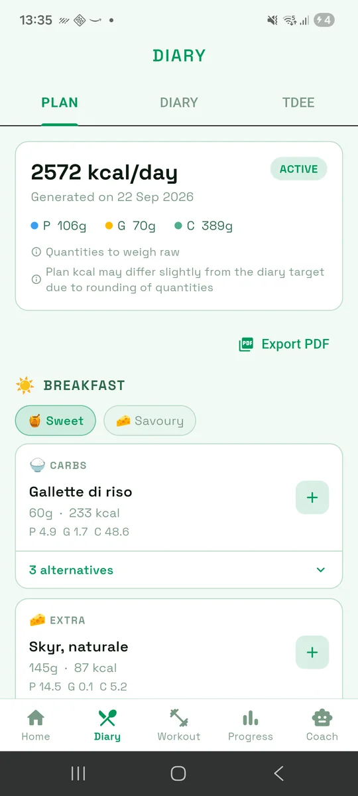
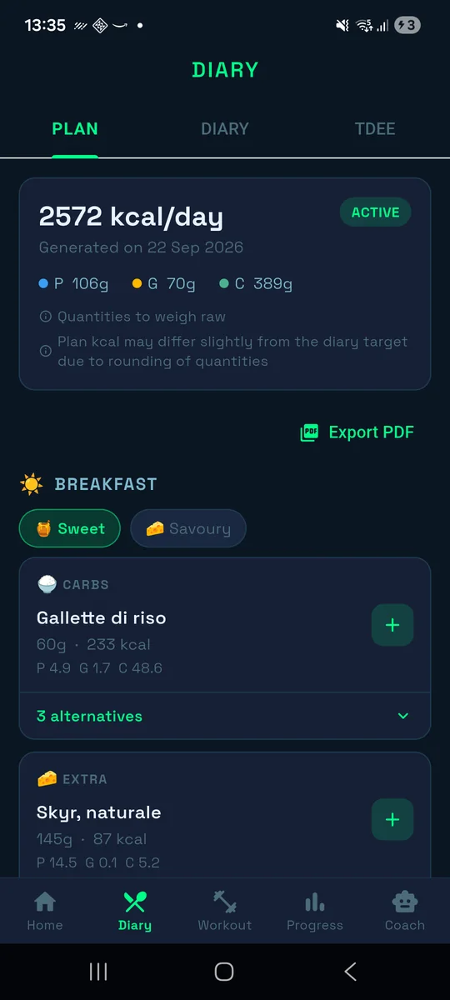
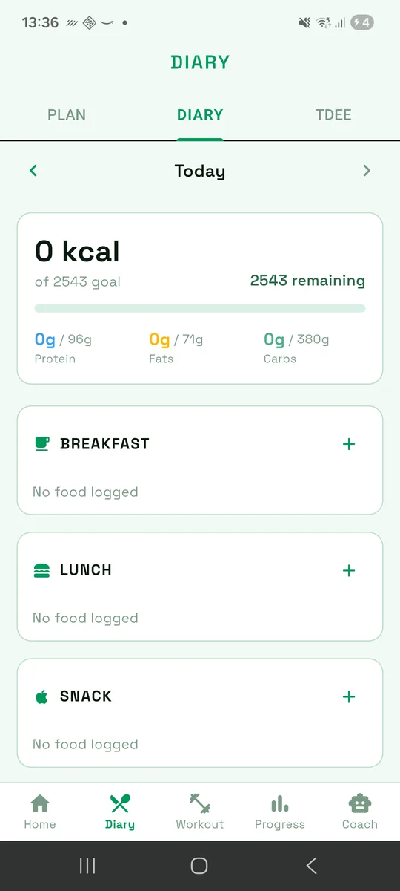
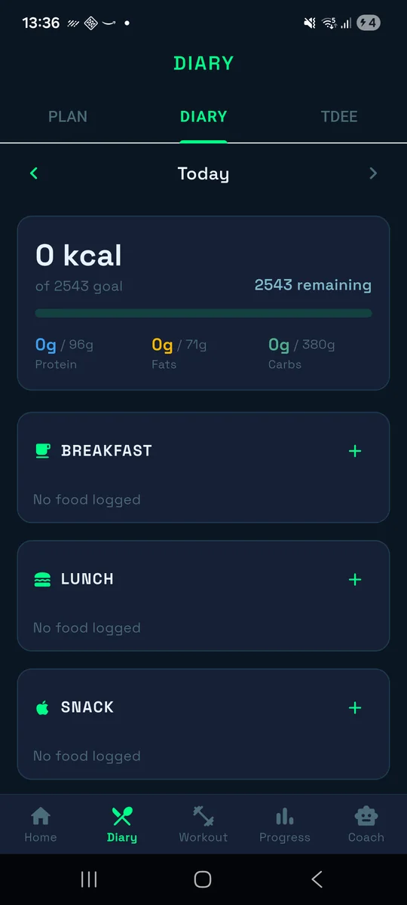
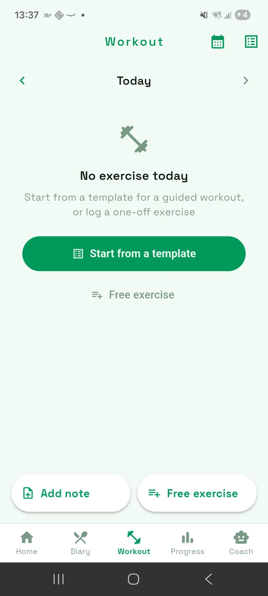
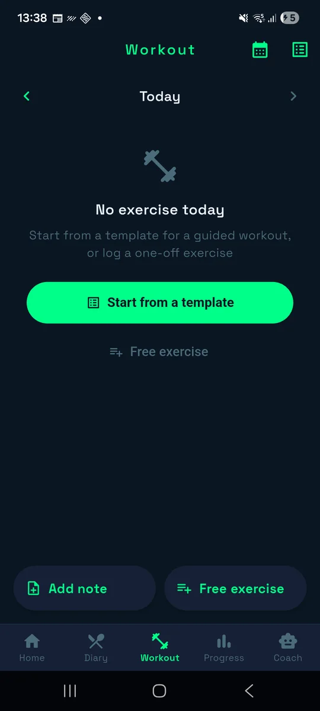
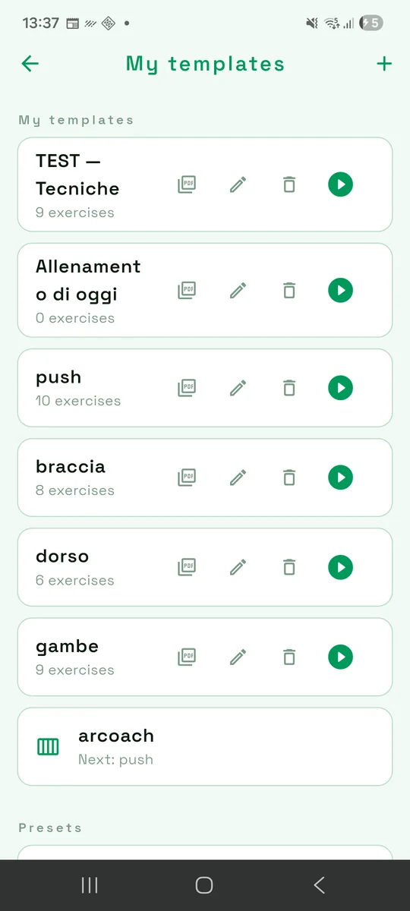
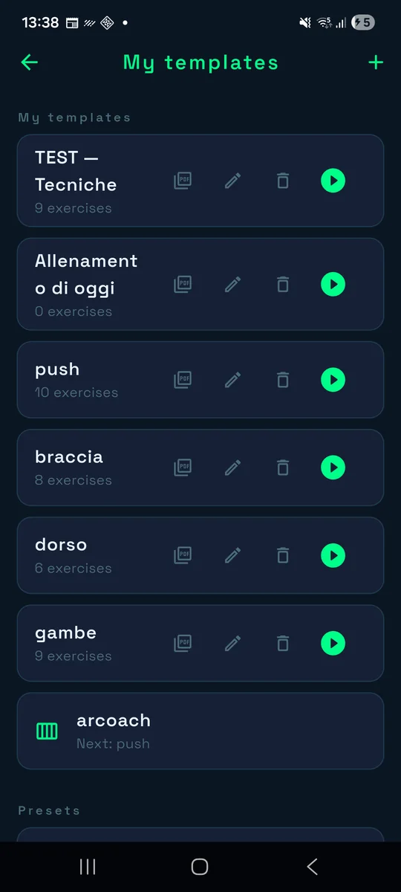
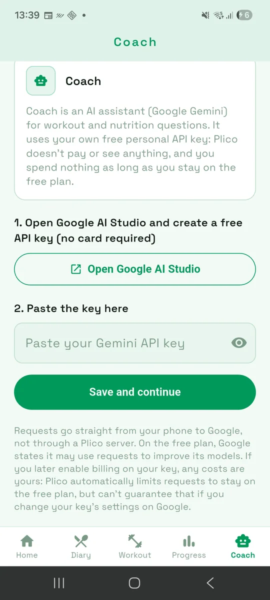
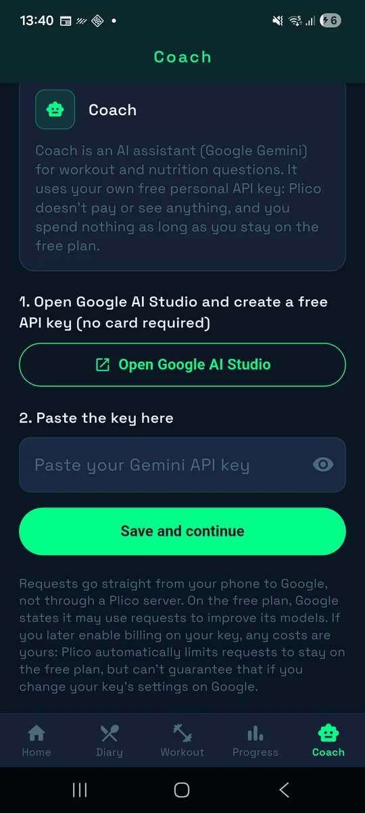
Swipe or scroll sideways for more. Sample data only.
Coach is optional. It answers workout and nutrition questions using your plan and recent data as context, and can draft recipes, a new meal plan or a new workout from buttons.
On the free plan Google states it may use requests to improve its models. If you enable billing on your key, any costs are yours. Skip Coach entirely and everything else works the same.
Plico has no accounts and no backend. The only network calls are the ones you trigger: searching Open Food Facts, scanning a barcode, or asking the Coach.
Meals, workouts, measurements and settings live in an on-device database.
Export a backup file, import it elsewhere, or send everything to another phone over your Wi-Fi.
The whole app is on GitHub under the GPL-3.0. Read it, build it, change it.
Yes. Plico combines workout tracking (guided sessions, programs, an 875-exercise catalog) and nutrition (food diary, meal plans, TDEE and macros) in one free, GPL-3.0 Android app.
No. There is no account and no Plico server. Your data is stored in a local database on your phone.
Mostly. The exercise catalog, the CREA food database, workouts, the diary and the charts work offline. Searching Open Food Facts, looking up scanned products and the AI Coach need an internet connection.
Not at the moment. Download the APK from GitHub Releases or build it from source in four commands.
No. Plico is Android only (Android 5.0 and later).
It is an optional assistant powered by Google Gemini. You paste your own free API key, requests go straight from your phone to Google, and Plico has no server. On Google's free plan it costs nothing; if you enable billing on your key, any cost is yours.
The Italian CREA food composition tables (645 foods), plus Open Food Facts for packaged products.
Yes, under the GPL-3.0: you can use, study, modify and share it, as long as distributed versions keep the copyright notice and the same license, with source code.
There is no store listing, so you build it yourself or download the APK from the releases page. No signing keys or accounts needed.
git clone https://github.com/mariogiordano96/plico.git
cd plico
flutter pub get
flutter build apk --release
# build/app/outputs/flutter-apk/app-release.apkThe release build is signed with the debug key unless you add your own key.properties. iOS is not supported.
Plico is released under the GNU GPL v3.0. Copyright © 2026 maxio96 (Mario Giordano). The name and logo are not covered by the license.
Food composition tables by CREA – Centro di ricerca Alimenti e Nutrizione. Source cited as requested; the data keeps its own terms.
Exercise catalog derived from free-exercise-db, released into the public domain.
Packaged-food search via Open Food Facts (ODbL). Typeface Space Grotesk under the SIL Open Font License.